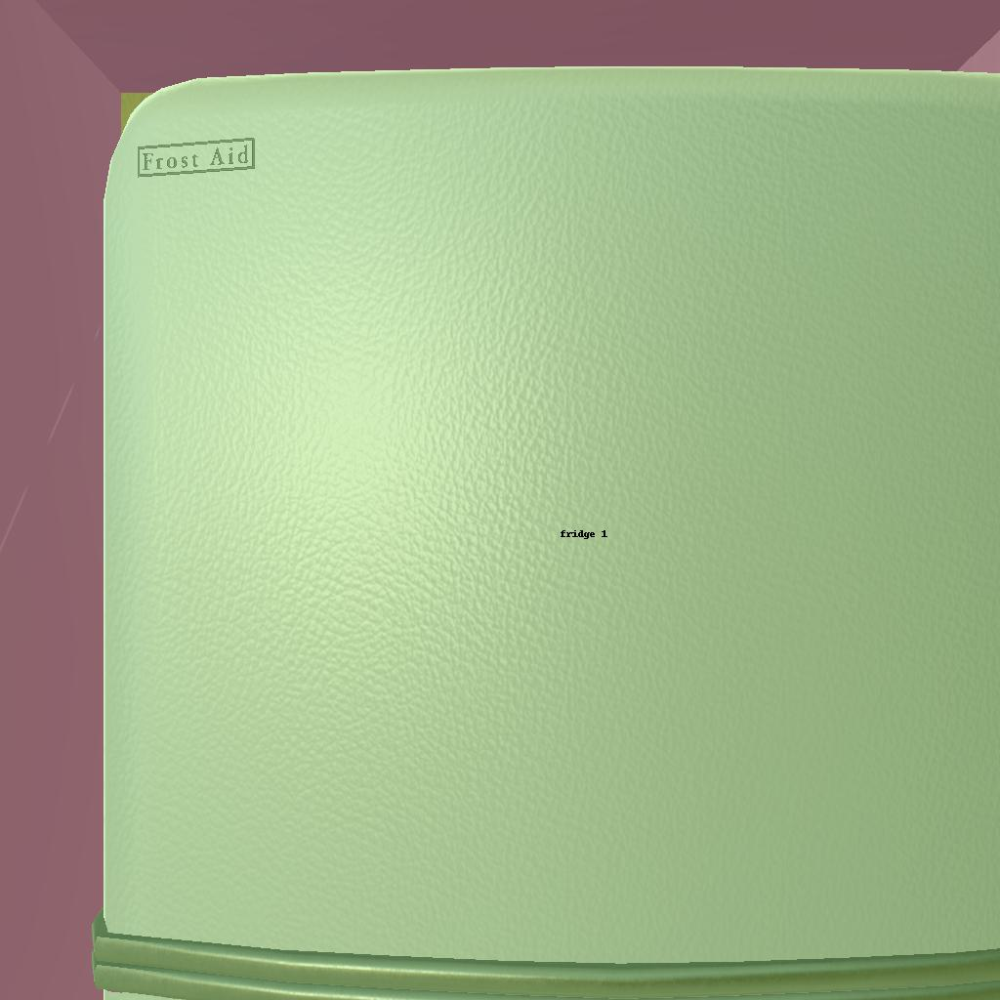

---------------------------------------------------------task: 16---------------------------------------------------------
--------------------------------------------------------------------------------------------------------------------------------------------------------------------
--------------------------------------------------------------------------------------------------------------------------------------------------------------------
Step:--------------------------------------------------------------------------6-------------------------------------------------------------------------------
----------------------------------------
VLM Prompt:
Image1:
Image2:
**Instruction**
1. Analyze the provided image to identify all visible household objects, focusing on those relevant to the task description "put a cool pan in sinkbasin."
2. Use the analysis of the image and the task hint "The agent must find an object of the desired type, pick it up, go to a fridge, cool the object with the fridge, then find the correct location to place it, and put it down there. The agent does not need to use the fridge button or open the fridge to cool the object, and the agent just needs to do action that is "cool the object with the fridge"." to answer the question: what is the most reasonable action in the choices for the task description "put a cool pan in sinkbasin"?
4. Decide and write the answer using the template: The answer is: (i): , where i is the real number. If there is no desired object in the image, search every place based on **Initial Observation** to find the object. And if no one is exactly correct, choose a similar answer.
**Initial Observation**
You are in the middle of a room. Looking quickly around you, you can see cabinet (1-9), countertop (1-3), drawer (1-9), stoveburner (1-4), microwave (1), sink (1), fridge (1), toaster (1), coffeemachine (1), sinkbasin (1), shelf (1-3), garbagecan (1)
**Answer Choices**
(1): go to cabinet 1
(2): go to cabinet 2
(3): go to countertop 2
(4): go to drawer 1
(5): go to drawer 2
(6): go to drawer 3
(7): go to drawer 4
(8): go to stoveburner 1
(9): go to drawer 5
(10): go to stoveburner 2
(11): go to stoveburner 3
(12): go to stoveburner 4
(13): go to cabinet 3
(14): go to cabinet 4
(15): go to microwave 1
(16): go to cabinet 5
(17): go to cabinet 6
(18): go to cabinet 7
(19): go to sink 1
(20): go to toaster 1
(21): go to coffeemachine 1
(22): go to cabinet 8
(23): go to drawer 6
(24): go to drawer 7
(25): go to drawer 8
(26): go to sinkbasin 1
(27): go to shelf 1
(28): go to shelf 2
(29): go to countertop 3
(30): go to shelf 3
(31): go to drawer 9
(32): go to cabinet 9
(33): go to garbagecan 1
(34): take pan 1 from countertop 1
(35): take bread 1 from countertop 1
(36): take tomato 1 from countertop 1
(37): take spoon 1 from countertop 1
(38): take butterknife 1 from countertop 1
(39): take saltshaker 2 from countertop 1
(40): take cup 1 from countertop 1
(41): examine countertop 1
**Answer**
Let's think step by step by following the instructions.
----------------------------------------
----------------------------------------
Original Response:
The task is to put a cool pan in the sinkbasin. From the initial observation, we know that there is a sinkbasin (1), a fridge (1), and multiple cabinets and drawers where a pan could potentially be found. In Image 2, we can see a pan on the countertop. Therefore, the agent does not need to search cabinets or drawers for a pan.
According to the task hint, the agent needs to pick up the pan, cool it with the fridge, and then put it in the sinkbasin. There is no need to use the fridge button or open the fridge, just the action of cooling the object with the fridge. Image 1 shows the fridge labeled "Frost Aid," and Image 2 shows the pan labeled "pan 1" on the countertop.
Based on the analysis, the most reasonable action for the agent to perform next, considering the given answer choices, would be to take the pan from the countertop, as it is the object needed for the task. Therefore:
The answer is: (34): take pan 1 from countertop 1.
----------------------------------------
----------------------------------------
>>> Refine Original VLM Response and Get Pure Action: take pan 1 from countertop 1
----------------------------------------
-----------------------------------------------------------------
Running time: 23.430086851119995 seconds
Total Money: 7.590470000000001
-----------------------------------------------------------------
-----------------------------------------------------------------
Text Observation:You pick up the pan 1 from the countertop 1.
-----------------------------------------------------------------
UNSUCCEED